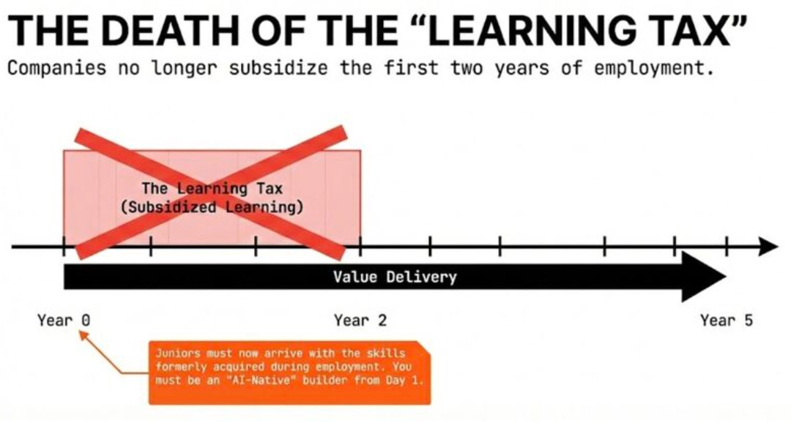

Yesterday, right before the blizzard shut everything down, I got on a Google Meet with a recent college grad. The daughter of my kids' math tutor. Her dad had reached out asking if I'd be willing to spend some time with her. She wants to become a data scientist. She's applied everywhere. She's now open to unpaid internships.
I looked at her resume beforehand. One line stuck with me: "Proficient in SUMIF, and VLOOKUP."

Here's the thing. AI tools can now do that inside Excel without knowing the formula. Not approximately. Right now.
And that's when I realized I wasn't looking at a resume problem. I was looking at the collapse of a deal that's been running entry-level hiring for decades.
The old deal was simple. Companies hired juniors for cheap labor. Juniors did grunt work and in exchange, the company subsidized their learning. You do the boring stuff. We pay you while you figure things out.
AI broke that deal. If a model can handle the grunt work instantly and for free, why would a company pay a human to learn how to do it?
The question facing every junior right now isn't "how do I compete with more experienced candidates?" It's "how do I compete with free?"
I showed her some slides I'd put together on this. She went quiet. I could tell she didn't know what to say. No one had framed it this way for her before.
But here's where the conversation got useful.
Juniors have one advantage over everyone already in the workforce that almost none of them are leveraging: time.
People who've been at a company long enough are context-rich but time-poor. Buried in meetings and deadlines. They adopt AI tools just enough to be functional, rarely enough to be fluent.
Juniors have the opposite problem. Time rich, context-poor. And that surplus of time is exactly what mastering AI demands. Learning which model fits which task, how to prompt well, how to chain tools together, how to catch when the model is confidently wrong. This is a craft that rewards obsessive, uninterrupted focus. And frankly, most people with a full-time job just don't have that kind of time.
Before we hung up I told her three things:
- Find one AI newsletter that meets you where you are. Not the hype stuff. Something that teaches you to actually use the tools.
- Take these slides and share them with your friends in the same boat. Most of them are facing this exact problem and don't have the language for it yet.
- Build a learning community with those friends. Not a study group. A practice group for the craft that will define your careers.
After we hung up I kept thinking about it. This wasn't just about one person's job search. Her college probably left her with six figures of student debt and didn't prepare her for the most fundamental shift in how work gets done. That part genuinely frustrated me.
The underlying shift is simple: juniors used to sell effort. Now they need to sell leverage.